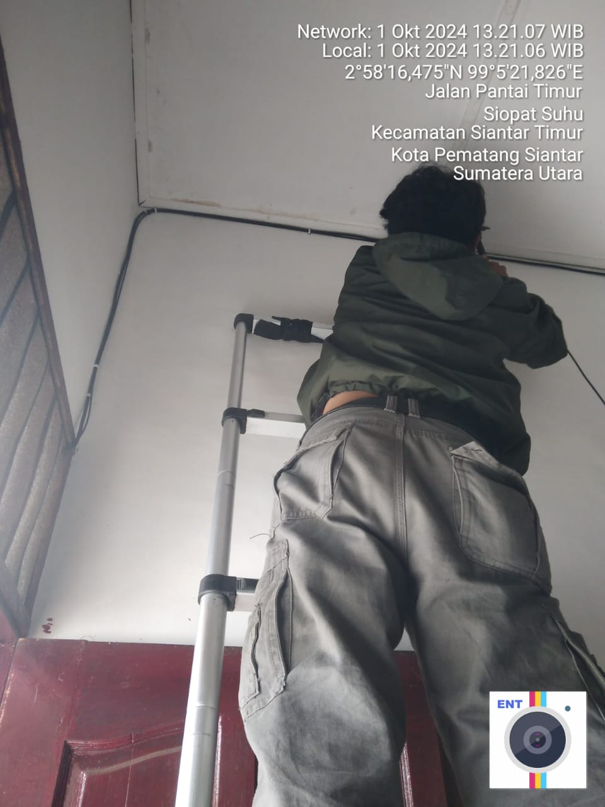
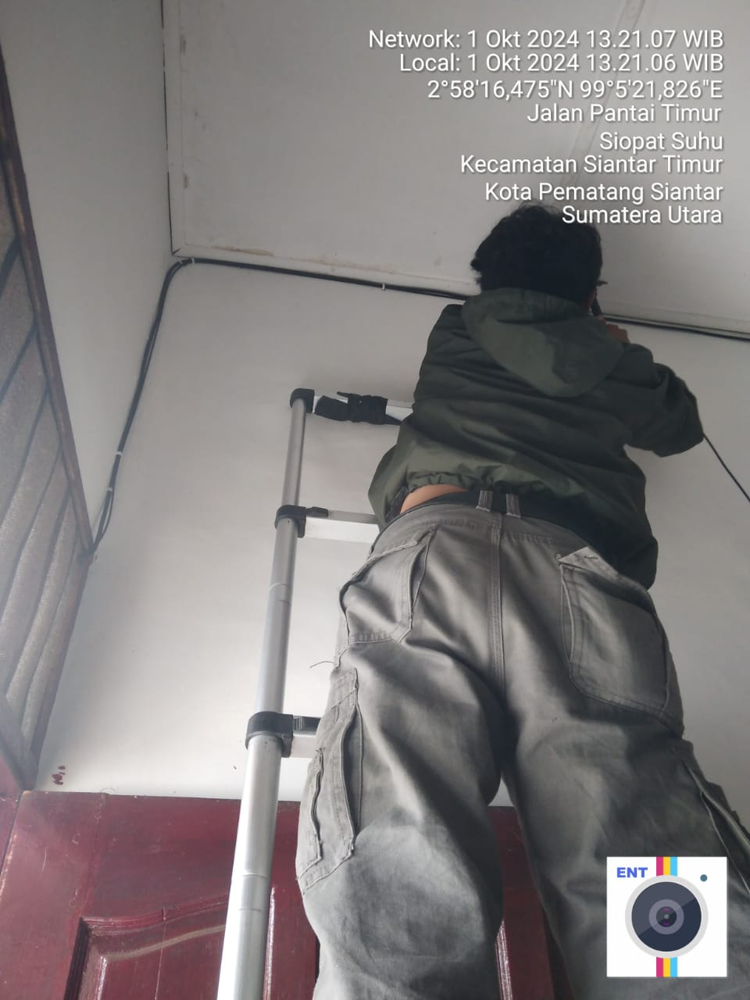

PSB (PEMASANGAN BARU)
Pemasangan Baru Kepada Pelanggan, 26 July, 2024
Pemasangan jaringan Wi-Fi baru merupakan langkah penting untuk meningkatkan konektivitas di rumah atau kantor. Proses ini dimulai dengan pemilihan perangkat modem yang sesuai dengan kebutuhan, seperti kecepatan dan jangkauan sinyal. Setelah itu, penempatan modem yang strategis sangat krusial untuk memastikan sinyal merata ke seluruh area. Konfigurasi jaringan juga harus dilakukan dengan baik, termasuk pengaturan keamanan untuk melindungi data pengguna. Dengan pemasangan yang tepat, jaringan Wi-Fi dapat memberikan akses internet yang cepat dan stabil, mendukung berbagai aktivitas online seperti bekerja, belajar, dan hiburan.
BERIKUT CONTOH FOTO PSB:
 
